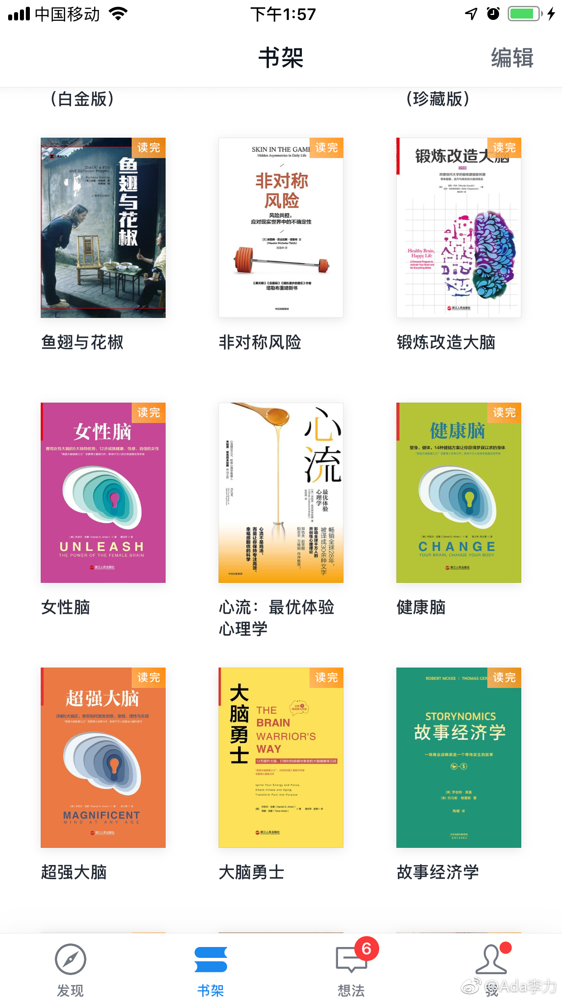

#读书# Daniel Amen有几本关于脑科学的书《大脑勇士》《超强大脑》《健康脑》《幸福脑》《女性脑》，前三本内容大部分是在说生活习惯如何影响脑健康，以及如何通过饮食，锻炼，思维方式训练来获得更好的大脑健康。
亚蒙能开创脑科学这一领域，得益于他把脑图像和精神科诊断结合起来，属于一个跨界的学科。不过让他获得名气的还是在脑科学上的科普工作，大众真的对自己脑袋是怎么回事这事儿挺好奇的。我也是因为同样原因才看这些书，只是更偏重在这些脑科学知识如何转化成商业机会。
从这些书里可以看到，亚蒙推崇自然饮食，所以提供了很多如何用饮食改善脑健康的建议。同时，他的诊所也销售各种这类补剂。如果说到效果，感觉跟纽崔莱这样的产品差不多，但有着医学博士头衔，而且这么多的科普内容，会让用户觉得还是亚蒙博士销售的各种补剂更靠谱吧。
掠过《幸福脑》没看，《女性脑》倒是值得说说。
亚蒙能开创脑科学这一领域，得益于他把脑图像和精神科诊断结合起来，属于一个跨界的学科。不过让他获得名气的还是在脑科学上的科普工作，大众真的对自己脑袋是怎么回事这事儿挺好奇的。我也是因为同样原因才看这些书，只是更偏重在这些脑科学知识如何转化成商业机会。
从这些书里可以看到，亚蒙推崇自然饮食，所以提供了很多如何用饮食改善脑健康的建议。同时，他的诊所也销售各种这类补剂。如果说到效果，感觉跟纽崔莱这样的产品差不多，但有着医学博士头衔，而且这么多的科普内容，会让用户觉得还是亚蒙博士销售的各种补剂更靠谱吧。
掠过《幸福脑》没看，《女性脑》倒是值得说说。
- 